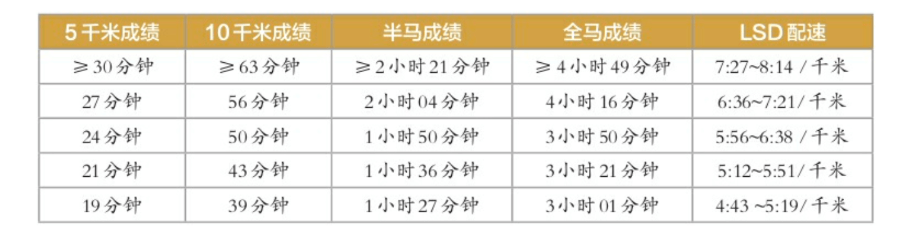
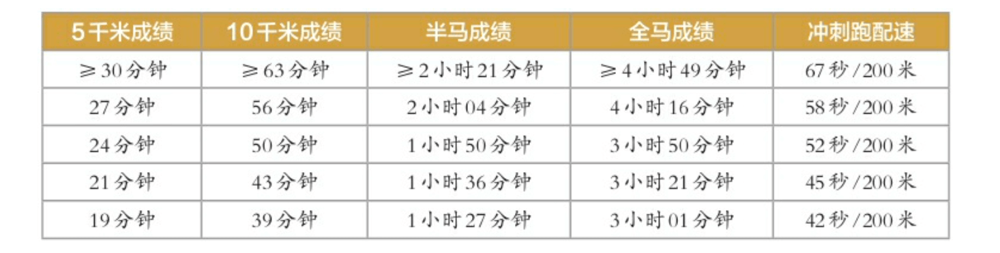
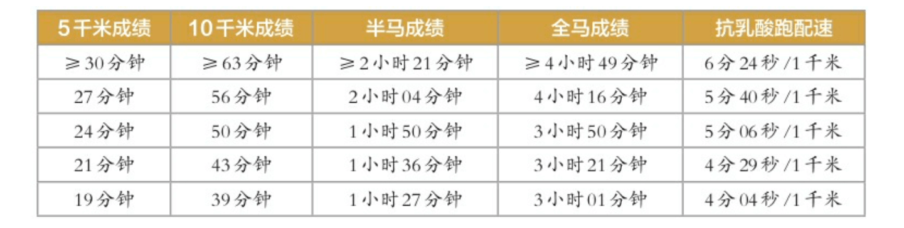
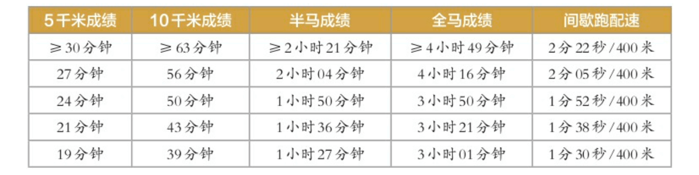
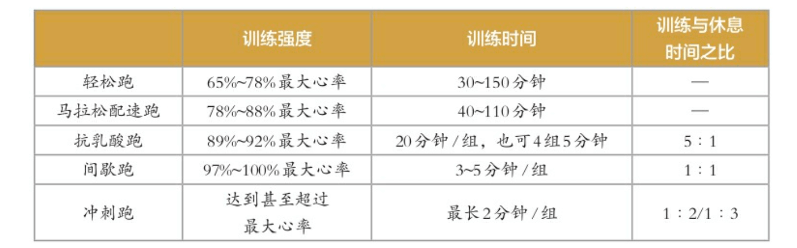
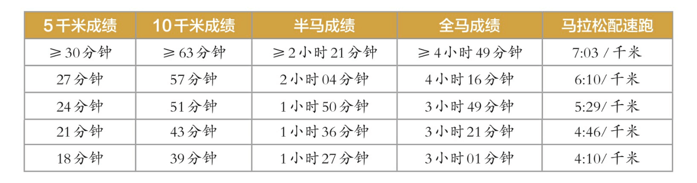

《无伤跑法》读书笔记
最近几年断断续续跑步，整体上成绩没什么提升。但自从前几天勉强跑了一次半马后，就开始膝关节微痛，虽然我体重不沉，但属实发现连长跑需要的最基本装备都不了解，一件 T 恤，一件运动裤就去跑马了（醉）。没有速干衣、没有控制稳定配速、没有做合理的跑后恢复。所以，找一本书来恶补一下常识 :(
第 1 章 - 无伤奔跑的基础知识与技能
- 按照《美国身体活动指南》中的规定，配速 6’15 以内的跑步活动即为极大强度活动。
- 每周跑步 75 分钟是维持健康的最少跑量。
- 跑步时合理呼吸：
- 以口代鼻，口鼻并用呼吸（增大通气量）；
- 控制呼吸频率，每分钟不超过 30 次（呼吸一次 2 秒以上）；
- 偏重深呼气；
- 与跑步动作配合，节奏很重要（如：2-4 步一吸气，2-4 步一呼气）。
- 空腹晨跑一般不会发生低血糖，吃不吃东西看个人，补水则人人需要。
- 错误的跑前热身方式：绕膝、脖颈环绕、腰部环绕、弹震式弯腰、下腰转体、快速踢腿。
- 正确的热身方式：包括慢跑、肌肉动态牵引和专项热身。
- 正确的跑后拉伸：（Keep）。
- 使用泡沫轴有助于消除肌肉打结点（肌肉表面某些点按上去特别疼），最好选择表面光滑的泡沫轴。
- 怎样避免岔气？
- 加强核心力量，即腰腹部力量（平板支撑、卷腹、俯卧挺身等）；
- 跑前尽量避免使用高脂肪和粗纤维食物；
- 做好跑前热身；
- 加大呼吸深度（尤其是深呼气）。
- 关于跑鞋：
- 选鞋一定要自己试穿，跑动 10 分钟再做决定；
- 尽量购买两双跑鞋交替使用；
- 观察鞋底磨损情况判断自身跑步姿势是否存在明显问题。
- 压缩装备：利用弹性梯度织物产生压力差，从而更好地促进体内血液和淋巴流动。同时还可以很好地减小运动时导致的肌肉震动，在一定程度上缓解肌肉疲劳。
- 压缩腿套；
- 压缩衣；
- 压缩裤。
第 2 章 - 轻盈奔跑的关键 - 跑姿
- 马拉松运动员大多数情况会采用全脚掌（低配速）或前脚掌（高配速）着地的方式。脚后跟着地的方式通常会使得腿部肌肉和关节在脚步接触地面时受到较大的瞬间应力，因此运动受伤的分险较高。正常情况下，脚在着地过程中会产生轻度的足外翻，这一过程也可以帮助缓冲。合理的着地点在重心投影点略微靠前的位置，膝关节在着地时保持弯曲。另外需要注意，当配速逐渐升高时，小腿在在最高点的位置也会相应提升；
- 跑步时，总的地面反作用力是体重的 2~3 倍；
- 合理跑姿四要素：
- 头部正直，挺胸收腹并略微前倾；
- 以肩为轴心，自然前后摆臂，摆臂不要越过身体正中线；
- 着地点靠近臀部下方，即重心投影点，同时着地轻盈；
- 适当控制步幅，步频 180~190 步每分钟为佳。
- 相对快的步频、小的步幅是一种更保护膝盖的跑姿。
第 3 章 - 无伤奔跑的基础 - 力量训练
- 上肢力量训练：俯卧撑、臂屈伸、肩胛骨收紧训练、引体向上；
- 基础核心训练：卷腹、仰卧举腿、仰卧踩单车、侧卷腹、卷腹摸脚踝、屈腿雨刮器、侧卧起、屈腿侧卧起、侧卧并腿、俯卧挺身；
- 稳定性训练：平板支撑、侧桥、臀桥；
- 专项训练：平板支撑体位交替屈腿、俯桥提膝后摆腿、侧桥位单侧模拟跑步动作、单腿臀桥、臀桥接提膝。
- 下肢力量训练：
- 初级：四分之一蹲、半蹲、深蹲、宽蹲、原地弓箭步、臀桥、蹲跳；
- 中级：弓箭步、单腿上训练凳、保加利亚剪蹲、单腿硬拉、单腿臀桥、弓箭步跳；
- 高级：单腿上训练凳接高抬腿、平板支撑体位交替屈腿、侧桥位单侧模拟跑步动作、单腿硬拉接提膝、弓箭步接高抬腿跳起、弓箭步接高抬腿跳起。
- 臀中肌力量薄弱是导致跑步时骨盆不稳、膝盖内扣、膝关节压力增加和膝痛的重要原因。锻炼方式：髋部提拉、单腿外摆、单腿浅蹲后外摆、侧卧腿外摆、侧卧贝壳式、跪姿侧桥接上摆腿、俯卧四点支撑腿外摆。
- 小腿训练：
- 力量训练：勾脚练习、提踵；
- 稳定性练习：睁眼单脚站立、睁眼抱胸单脚站立、闭眼抱胸单脚站立；
- 缓冲练习：训练凳单腿下落缓冲；
- 爆发力练习：单脚原地跳、双脚前后跳、单脚前后跳。
- 爆发力训练（放在力量训练之前，一般一组 8-12 次，2 组，每周 1-2 次）：同时进行爆发力训练可提高高水平耐力运动员运动的经济性（跑步稳定状态下的每分钟耗氧量），其原因和肌肉的爆发力增强以及弹性势能提高有关。训练项目：弓箭步跳、弓箭步接高抬腿跳起、开合跳、反弓跳、台阶交替跳。
- 小肌肉群：足踝肌肉、臀中肌、腹横肌、肩部深层肌肉。训练方式：贝壳式、臀桥、下蹲、横向跨步、前后跨步、单腿后外展、侧卧直腿抬高、单腿提膝。
第 4 章 - 科学训练实现无伤奔跑
- 最佳的训练模式：80% 低强度训练（轻松跑），10% 中强度训练，10% 高强度训练。其中，轻松跑的心率应控制在最大心率的 65%-79%。
- LSD（低强度长时间跑）训练参考配速：

- 不同配速能力跑者冲刺跑的建议强度：

- 冲刺跑不需要单独进行，可放置在 LSD 训练尾声，一周 3-6 次；
- 一次冲刺跑的时间最长不超过 2 分钟。可按固定距离或时间训练；
- 可重复多组，冲刺与间歇时间之比为 1:2 或 1:3；
- 间歇时可以停下来休息，或用慢跑和快走代替。
- 不同水平跑者抗乳酸跑推荐配速：

- 每周 2-3 次，一次抗乳酸跑的跑量不要超过周跑量的 10%；
- 以最大心率的 89%-92% 进行训练；
- 一般需要累计奔跑 20 分钟；
- 训练和休息时间比为 5:1（如训练时间为 20 分钟，可采用训练 10 分钟，休息 2 分钟，再跑 10 分钟的方式）。
- 不同耐力水平跑者间歇跑的合理配速：

- 高强度跑和休息穿插交替进行；
- 不适合初级跑者，建议有 4-6 周的训练基础后再开始间歇跑；
- 每次的训练时间一般在 2-5 分钟之间；
- 训练和休息时间比为 1:1；
- 心率应达到最大心率的 95%-100%。间歇时，要求心率恢复到最大心率的 65%-79%，再开始下一组；
- 每次跑的训练时间控制在 20-30 分钟之间（对应总时间为 40-60 分钟）。
- 温和的 MAF 180 训练：MAF -> Max Aerobic Function。
- 由 “Philip Maffetone” 博士提出；
- 该训练法最大的特点是只看心率，不问速度，用 180 减去年龄作为跑步时的目标心率；
- 至少要保证 8-12周 的训练时间，效果才会慢慢显现出来。
- 800 米跑：
- 心率应达到最大心率的 95%-100%；
- 训练和休息时间比为 1:1，每一组 800 米跑应保持在 3-4 分钟之间；
- 通常状况下进行 4-8 组即可；
- 亚索 800：以在操场跑完 10 组 800 米跑为例，每组 800 米完成的时间相同，并且组间休息时间与完成 800 米时间相同。如果你能完成上述标准训练，以多长时间完成 每组 800 米跑，那么最后你参加马拉松比赛的完赛时间就是与 800 米近乎相同的数字。
- 法特莱克（Fartlek）跑：法特莱克跑是一种快慢相间但没有严格规定的任意变速跑，通常在户外进行，由跑者根据自身的体力情况决定快跑段和慢跑段的距离及次数。创造它的初衷为了摆脱枯燥的日常训练。
- 细胞分裂法：由日本运动员“铃木清和”发明。
- 首先，找出用鼻子呼吸时的最高速度，即“原生速度”。原生速度通常是最大摄氧量的 50% 左右；
- 计算 50% 储备心率：
- 最大心率 - 通常用 220 减去年龄；
- 储备心率 - 最大心率减去安静心率；
- 50% 最大储备心率 - 用储备心率乘以 50%，再加上安静心率。
- 维持原生速度跑，先分为多组，配合组间休息，直到能够不休息跑完 10 公里；
- 最大摄氧量 = 15 x (最大心率 / 安静心率)，可用于评估耐力水平的指标。
- 1.6 公里走测试：受试者在水平地面上以最快速度步行 1.6 千米，测试运动后即刻心率，并通过公式计算：132.853 - 0.035 × 体重（KG）- 0.3877 × 年龄 + 6.315 × 性别 - 3.2649 × 时间（分钟）- 0.1565 × 心率（次/分）（男 1，女 0）；
- 12 分钟跑测试：测试12分钟内跑动的最大距离，并通过公式计算：0.0268 × 距离（米）- 11.3 或平均跑速（米/分）× 0.2 + 3.5；
- 2.4 公里跑测试：测试跑动 2.4 千米需要的最短时间，并通过公式计算：平均跑速（米/分）× 0.2 + 3.5。
- 五种配速跑最佳靶心率区间：

第 5 章 - 没有伤痛才能轻盈奔跑
- 对于大众而言，每周跑量的安全上限为 92 千米，即月跑量 368 千米。但众多研究一致认为，每周跑量超过 64 千米，对于普通跑者而言，伤痛率将大幅提高。
- 基本原则：没有跑过至少 15 千米，不要报半马；没有跑过至少 30 千米，不要报全马。
- 为预防跑者膝，可以在跑步时外用髂胫束支持带，跑步后使用筋膜枪帮助肌肉恢复。
- 几个治疗髂胫束摩擦综合征的训练：侧卧位直腿上摆、侧卧贝壳式、臀桥、跪姿侧桥、单腿下蹲、侧桥外展。
第 6 章 - 跑者的合理营养
（略）
第 7 章 - 人人关心的话题 — 如何跑步减肥
（略）
第 8 章 - 如何健康无伤地参加一场马拉松比赛
- 跑马撞墙：一般指在 30 公里左右时，身体的能量供给突然出现断层。
- 不同水平跑者马拉松配速跑参考配速：

- 基本策略：只有平时多跑步，认真积累跑量，才能从根本上提升耐力，让身体能够承受马拉松那样的极限运动量。而跑马拉松的关键策略就是按照适合自己的配速去跑，即以守住自己的心率的方式去跑。
- 心率漂移：马拉松比赛时间超长，由于疲劳、大量出汗导致身体脱水、体温升高等因素，越到比赛后程，相同配速下平均心率越高。而安全理性跑马拉松的一个重要策略是按照心率去跑，始终把心率控制在一个合理水平，当心率和配速冲突时，优先考虑心率。
- 马拉松配速跑心率需保持在最大心率的 79%-84%。